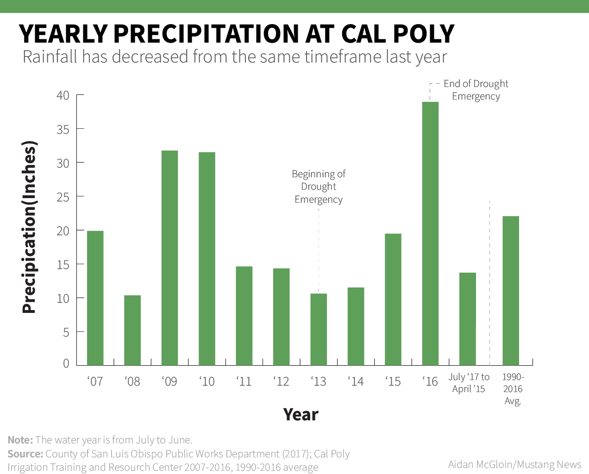
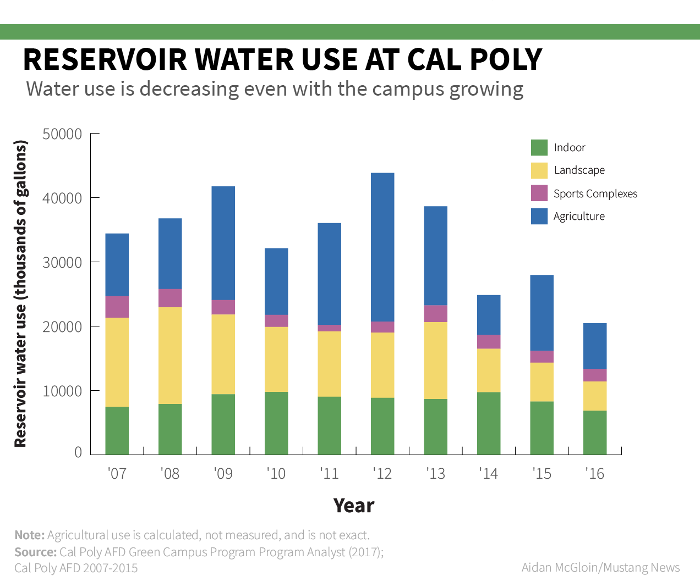

Multimedia
Video
Sacramento Funding Protest
Around a thousand students and faculty across the entire CSU system went to ask Governor Brown for increased funding April 3. Despite an increase in nominal funds, spending on the system would decrease due to inflation under Brown's budget.
Bike Maintenance at Cal Poly
Cal Poly is moving toward banning cars on campus and relying on bicycles and buses for transportation. The bike center and Cal Poly Cycling are two pieces to the puzzle. Read the full article here.
Student housing
1000 additional students were accidentally admitted to Cal Poly, forcing six at a time to live in spaces designed for four. I caught up with students to see if they were adversely affected. For the most part, they said, they were not.
This video was made in conjunction with another reporter, who dropped the piece. My video was not officially published with an article as a result.
Graphs
Note: These were made for a page with a white background and with a drastically different style. They will seem jarring on this website, but will appear better in the articles I linked to that they are published in.
Water Use
Cal Poly has been managing water more efficiently for years, even before the drought emergency of 2008.
Read the full article here.
{kind=link}

{kind=link}
Graduation Rates
The CSU system was treated to an influx of money to increase graduation rates. I look at how they increased over the years.
Read the full article here.

Tenure Density and Faculty Employment
Before the graduation initiative, I wrote on the issue of tenured professors on campus. They are remaining constant even with an increasing student population. The slack is picked up by part time lecturers.
Read the full article here.


Social Media
Audio
This is an interview from a protest over a man's death in a county jail. The man speaking is his cousin, Joshua Holland. Read the full article here.